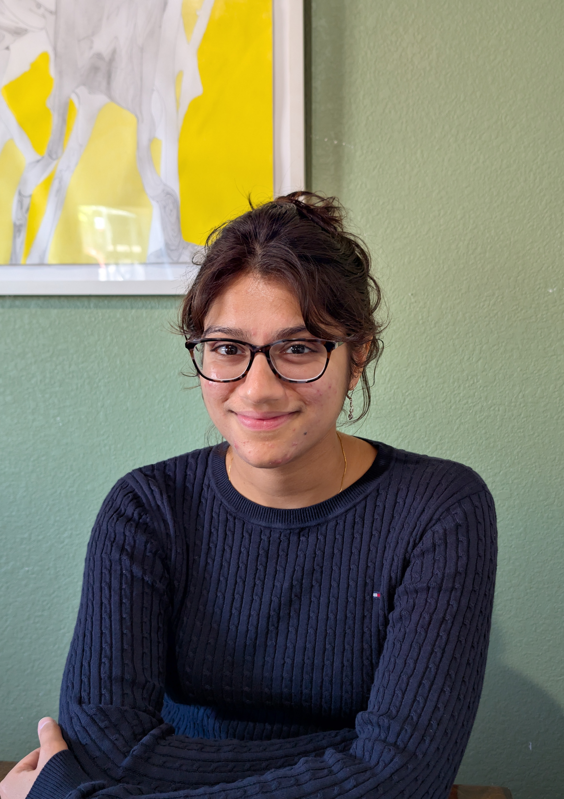

About
A myriad of works have shown that the data ingested by models is the ultimate driver of model capability and reliability. Still, data curation is scattered across disparate subfields such as data efficiency and synthetic data generation. This tutorial brings these areas together and presents them in a unified light.
It is meant as an introduction to data curation research for newcomers, a refresher on newer topics for practitioners, and a foundational discussion for data curation experts.
Outline
- Why data curation is still a problemHow the demands on what models should learn from data keep changing.
- Curation across the training stagesHow curation differs in pre/mid-training, supervised fine-tuning, and post-training / RLVR.
- Techniques, old and newClassic methods that are still relevant, and state-of-the-art approaches to data selection and synthesis.
- Open problemsDirections for future research.
Organizers

Ishika Agarwal
3rd year PhD candidate at the University of Illinois, Urbana-Champaign. Her research focuses on data efficiency and synthetic data generation, with work published in EMNLP, ICLR, and NeurIPS.
Arkajyoti Chakraborty
AI Scientist at Uniphore. His research focuses on synthetic data generation, with a focus on reliability and scalability. His work is published in AAAI, ACL, and LREC-COLING.
Dilek Hakkani-Tür
Professor at UIUC, formerly leading research at Amazon Alexa AI, Google Research, Microsoft Research, ICSI, and AT&T Labs on dialogue systems and NLU. IEEE, ISCA, and ACL Fellow.
Andreas Stolcke
Distinguished AI Scientist at Uniphore, previously at SRI International, Microsoft, and Amazon. 300+ papers and patents across language modeling and speech; creator of the SRILM toolkit. IEEE, ISCA, and AAIA Fellow.